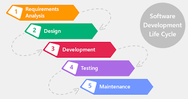

Waterfall ehk Kosemudel
Waterfall on üks esimesi tarkvaraarenduse mudeleid, mis järgib lineaarselt järjestatud etappe,
kus iga samm tuleb enne järgmise alustamist lõpule viia. See on sarnane traditsioonilistele tootmisprotsessidele,
kuid tagasipöördumine eelmiste sammude juurde on keeruline.
Waterfall-mudeli Põhietapid
-
Nõuete määratlemine:
Dokumenteeritakse arendatava tarkvara nõuded, süsteemi käitumine ja tehnilised vajadused.
-
Süsteemi ja tarkvara kavandamine:
Määratakse tarkvara arhitektuur, andmestruktuurid ja liidesed.
-
Teostus ja testimine:
Programmeerimine toimub moodulhaaval, iga moodulit testitakse eraldi.
-
Integratsioon ja süsteemi testimine:
Testitakse kogu süsteemi funktsionaalsust ja tarnitakse klientidele.
-
Kasutamine ja hooldus:
Parandatakse vigu ja tehakse vajalikke uuendusi vastavalt kasutaja vajadustele.

Waterfall-mudeli Plussid ja Miinused
| Küljed |
Kirjeldus |
| Plussid |
Selge ja struktureeritud protsess, lihtne hallata ja dokumenteerida. |
| Miinused |
Vähene paindlikkus, tagasipöördumine eelmiste etappide juurde on keeruline. |
Allikad
EUCIP - Kosemudel
ChatGPT